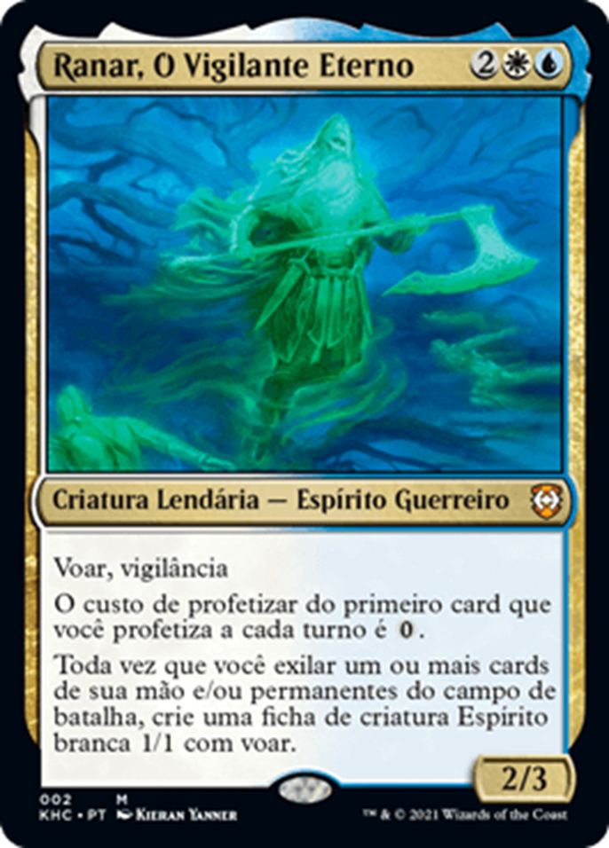

Ranar, O Vigilante Eterno 👻
Voltar para a página de decks de Kaldheim
Deck: Premonição Fantasmagórica
Este deck consiste em uma temática de
blink/flick
além de uma subtemática de
fichas
e
profetizar
.
